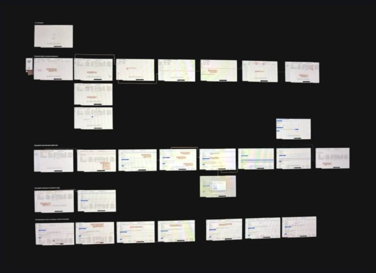
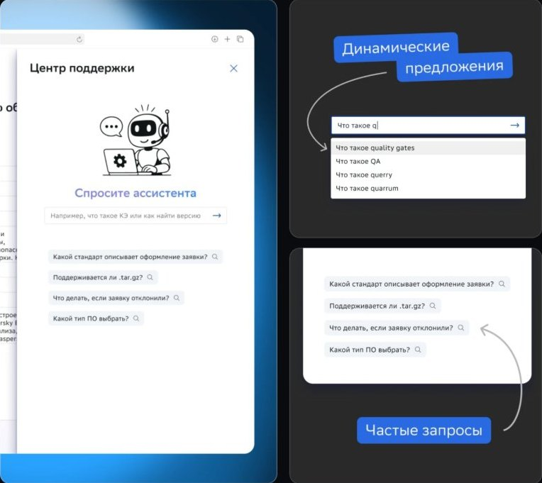
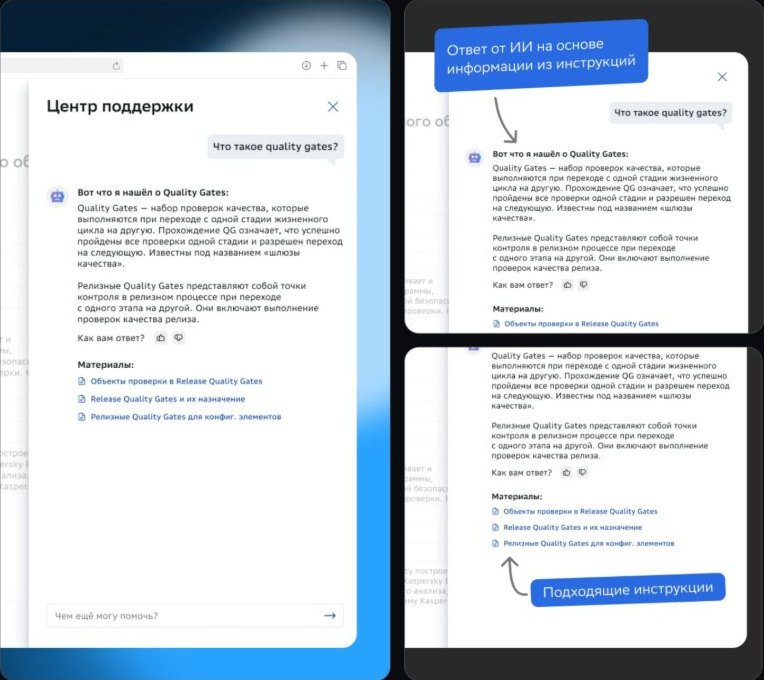
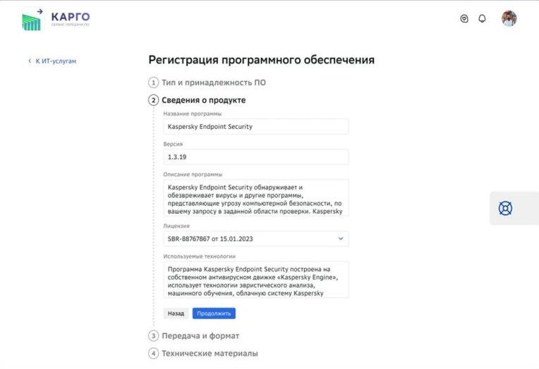
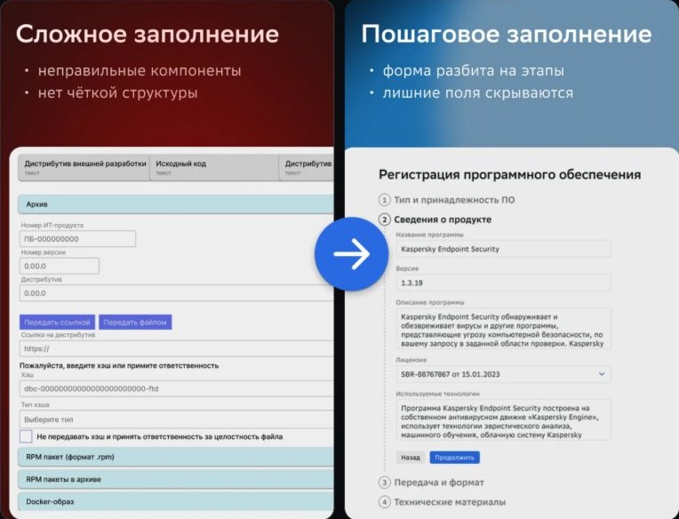
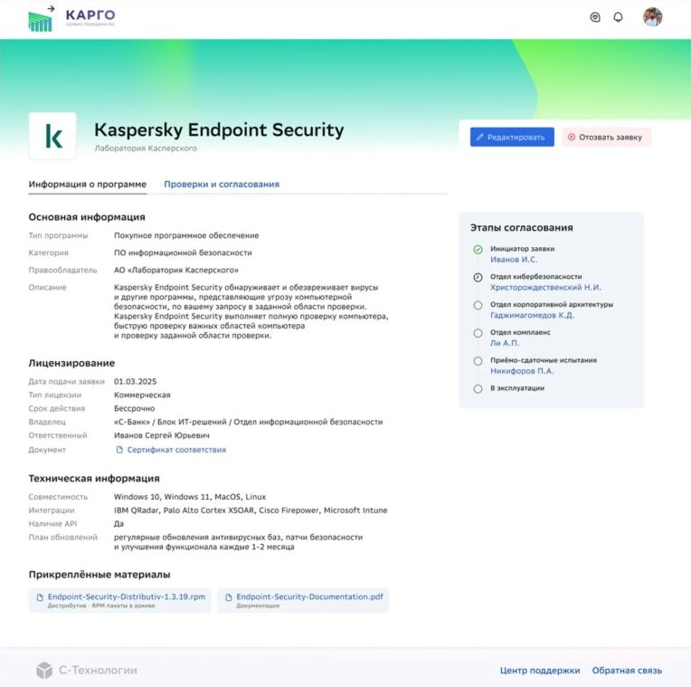

Карго
Сервис проверки новых программ перед внедрением в компанию. Команды регистрируют в нём купленные или open-source программы, а Карго проводит их через проверку на безопасность, комплаенс и архитектуру.
Как устроен процесс
- Регистрация. Команда регистрирует в сервисе внешнюю программу, купленную или open-source.
- Проверка. Программу проверяют на соответствие внутренним требованиям: комплаенс, безопасность, архитектура.
- Внедрение. Программу согласовывают и внедряют в контур компании.
Где пользователи спотыкаются
UX-чекап
Прошёл по всему сервису как пользователь. Зафиксировал каждый шаг, состояния формы, поведение системы при ошибках и отклонениях. Получилась карта экранов с отмеченными проблемными местами.

Глубинные интервью
Изучил результаты интервью с шестью пользователями, которые впервые создавали заявку на регистрацию новой программы.
Инструкция, которая сделана год назад, зачастую уже неактуальна. Возможно, коллегам проще на словах объяснять, если запросов мало.
Создаёшь заявку, она возвращается: «сделайте такие приседания, а после этого напишите письмо тому-то и продолжим». Ответ выходит формальный.
По атрибутам получила ссылку на инструкцию, которую я до дыр изучила, но всегда остаётся куча каких-то вопросов и нюансов.
Выводы
- Инструкции хранятся неудобно: информация постоянно обновляется и устаревает.
- Форма заявки громоздкая и запутанная, заявки часто возвращают на доработку из-за ошибок.
- Пользователи не понимают, где их заявка: статус виден, только когда её отклонили на одном из этапов.
Справка прямо в интерфейсе
Проблема
Инструкции лежали в разных документах и в разном виде. У пользователей оставались вопросы, и они постоянно уточняли детали у коллег.
Гипотеза
Если встроить поддержку прямо в интерфейс, пользователь быстро получит актуальный ответ, и ошибок при заполнении заявок станет меньше.
Решение
Добавил дроер, который ищет ответ по базе актуальных инструкций, выдаёт готовый ответ и прикрепляет подходящие материалы.


Пошаговая подача заявки
Проблема
Форма регистрации ПО была громоздкой и запутанной. Пользователи тратили много времени, ошибались и часто получали заявку обратно на доработку.
Гипотеза
Пошаговая форма поможет заполнять заявку последовательно и уменьшит количество ошибок.
Решение
Разделил процесс на шаги с логичной структурой и встроенными подсказками. У каждого поля есть пояснение, а лишние поля скрываются.


Прозрачный статус согласования
Проблема
Инициаторы не понимали, на каком этапе согласование. Результат показывался, только когда заявку отклоняли.
Гипотеза
Если показать статус, инициатор будет понимать, что происходит с согласованием прямо сейчас.
Решение
Показал этапы согласования на странице каждой программы и в карточках на главной. На странице видны согласующие эксперты, которым можно задать вопрос.

Концепт принят в разработку
Следующий шаг — пилот на ограниченной группе команд и замер времени прохождения заявки.